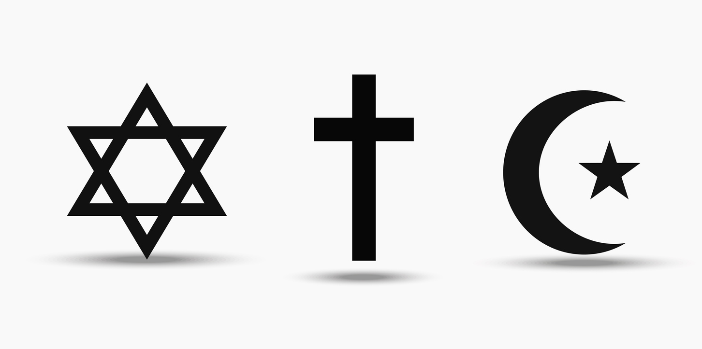

The Practical Utopian
The Practical Utopian
Rejiggering Our Religion
By Herb Bowie

When it comes to religion, the main question for most people is whether to keep the one we were raised with, or to lose it altogether.
I'm starting to wonder, though, whether we're asking the wrong question.
I know that Karl Marx declared religion to be the opium of the masses, but given declining rates of religious belief, and increasing rates of opioid abuse, don't we have to ask: might not a virtual opiate still be better than the real thing?
I was raised as a Christian and, more particularly, a Methodist, but of late have tended to call myself a humanist or, more particularly, a Practopian.
But now I'm starting to wonder whether, instead of losing my religion altogether, it might not be better just to rejigger it a bit?
In other words, perhaps the primary question we should be considering is not whether we have religion, or which religion we have, but what kind of religion we have.
I'm certainly not the only person asking this question. Thoughtful Christian insiders such as Peter Wehner are wondering exactly what sort of religion Christianity has become, if it now views Donald Trump as its savior and defender. Wehner refers to this issue as “The Deepening Crisis in Evangelical Christianity.”
The United Methodists are also asking what kind of religion they have, and having a hard time coming to a common answer, leading to questions of whether the denomination will split over issues concerning acceptance of LGBTQ clergy and same-sex marriages.
And then there's Marianne Williamson, contender for the 2020 Democratic presidential nomination, a popular spiritual author and speaker whose voice stands outside of any traditional religious institutions. Hers is not your mother's or father's religion, but it certainly appeals to a large number of people who have become disenchanted with traditional churches.
And so, as long as we're asking the question of just what sort of religion we think we should have, let me give you my thoughts on the topic.
Here are the bits I would throw out, along with the ones I would keep in.
OUT: Beliefs in heaven and hell and reincarnation as literal realities.
IN: A belief that our lives have meaning, along with a desire for that meaning to extend beyond our individual lifespans.
OUT: A desire for life after death as a reward for adhering to the dictates of a particular religion while here on earth.
IN: A desire to create a better life here on earth for ourselves, our friends and family, and ultimately for our tribe, for all humans, and for all living things.
OUT: Belief in a god or gods as beings that stand outside of nature, and exert a ruling influence over our world.
IN: Belief in powerful natural forces that have shaped our world and allowed humans and other living things to have a home here.
OUT: Trusting that God is in charge, and so everything will work out for the best.
IN: Accepting human responsibility for our actions and their consequences.
OUT: A belief that shared and traditional stories are best understood as literal histories of past events.
IN: An understanding that we humans are, by nature, symbol creators and symbol manipulators, and that one of the most powerful ways for us to experience meaning is through the construction and sharing of narratives that weave sets of symbols together into stories.
OUT: The idea that science, and scientific discoveries such as evolution, somehow stand in opposition to our religious convictions.
IN: An understanding that science represents a way for humans to gain an ever more enlightened and more empowered appreciation for the wonders of of the cosmos, including our own existence.
OUT: A belief in spirit as some independent force or energy that can exist separate from a living organism.
IN: A respect for life and living things.
OUT: Worship and prayer as means of showing reverence for, or communication with, a particular deity.
IN: A respect for worship and prayer as forms of contemplation and dedication to a higher, more inclusive, more lasting sense of meaning.
OUT: The idea that one religion is superior to all others, along with the desire to convert everyone to this one right religion.
IN: Respect for a variety of religious traditions that each offer up a rich tapestry of stories, characters and practices, along with a desire to spread a group of shared and complementary ethical values.
OUT: Exclusion of some people based on who they are, where they come from, or what they look like.
IN: A welcoming willingness to include all people, at all levels of participation, irrespective of skin color, gender, sexual orientation, or ethnic origins.
OUT: Building of communities around narrow, unnecessarily restrictive sets of rules and labels.
IN: Building of local, conscious, intentional communities based on shared goals, ideals, stories and traditions.
OUT: Fundamentalist worldviews that see all social and political issues in terms of black and white, right or wrong, in or out, us vs. them, in accordance with some preordained, unchanging, divine plan.
IN: An evolutionary worldview willing to see social and political issues from a variety of perspectives, acknowledging the need for beliefs and attitudes to adapt to changing conditions and new information, while still seeking to find higher and common ground.
So these are the things I'm looking for in a religion, along with the things I'd like to avoid.
If you look over the list of beliefs above that I'd like to jettison – beliefs in an afterlife, in an all-powerful creator, in stories as literal history, in spirit as an independent force, in the superiority of one particular deity and one special religion, preferential treatment for one group over another, fundamentalism – you'll notice that these are all things that serve only to divide and disempower us, to pit one against another, and even against ourselves. These are things that devalue our common humanity in favor of other interests.
The things I'd like to keep, though – a desire for lasting meaning, a yearning for a better life, respect for nature and for living creatures, recognition of the value in a variety of contemplative practices, appreciation of stories, a common set of human-centered values, a sense of inclusive community – these are things that can bring us together, things that emphasize and celebrate our shared humanity.
If we can nudge our various religions and churches in this direction, then I'm starting to think we don't need to lose them altogether, and might even find that they have something valuable to offer our modern world, something that is otherwise missing, and all too easily mislaid.
So if it's the right sort of religion we're talking about – one with all the good bits, but without all the bad parts – then I don't care so much which religion it is.
So whether you consider yourself a Christian, a Buddhist, a Pagan, a Hindu, a Muslim, a New Age believer, or None of the Above, that makes little difference to me.
I'm more interested in whether you're willing to see religion as something capable of evolution and adaptation to meet the needs of our shared human fate in the 21st century.
So long as you're willing to do a little rejiggering to help us converge on something that works for all of us in our modern world, then I think we might be on to something.
Published 2019 Aug 13
 Content at Practopian.org is Copyright © 2009 - 2020 by Herb Bowie except where otherwise noted
Content at Practopian.org is Copyright © 2009 - 2020 by Herb Bowie except where otherwise noted